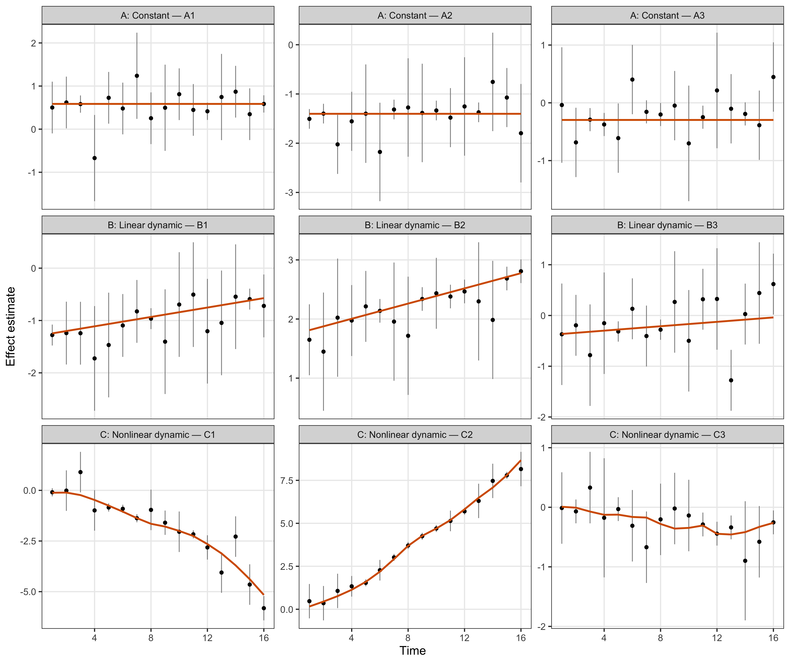
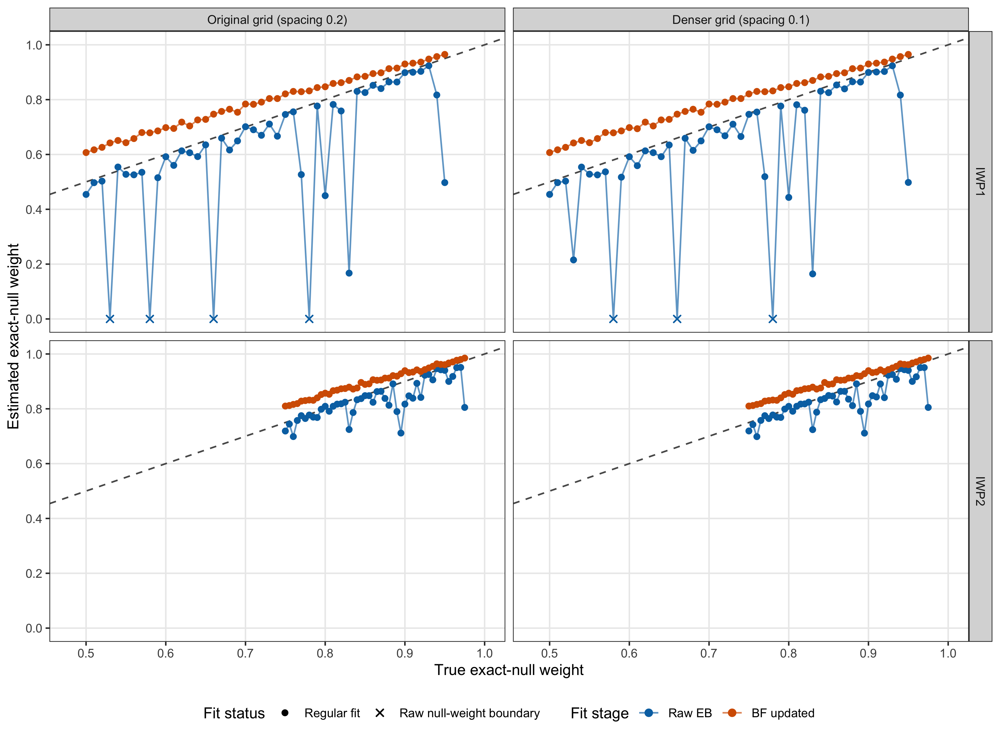
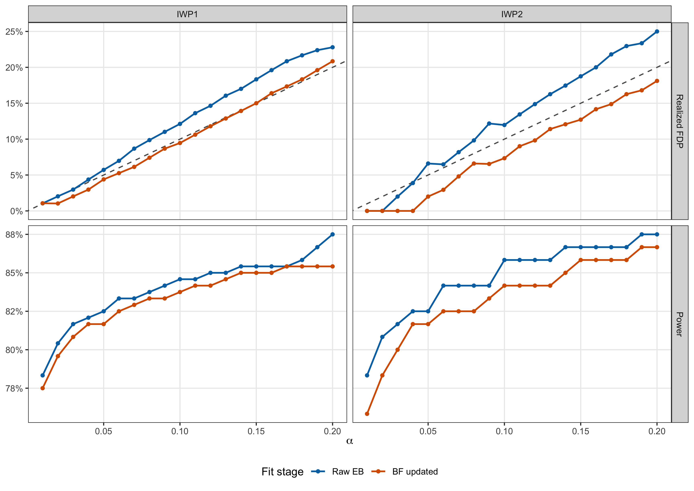
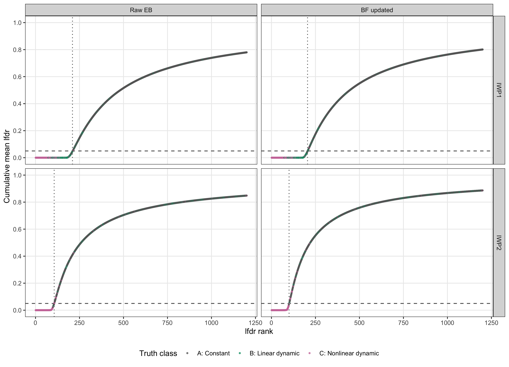

Last updated: 2026-08-22
Checks: 6 1
Knit directory: coderepo-local/
This reproducible R Markdown analysis was created with workflowr (version 1.7.2). The Checks tab describes the reproducibility checks that were applied when the results were created. The Past versions tab lists the development history.
The R Markdown file has unstaged changes. To know which version of
the R Markdown file created these results, you’ll want to first commit
it to the Git repo. If you’re still working on the analysis, you can
ignore this warning. When you’re finished, you can run
wflow_publish to commit the R Markdown file and build the
HTML.
Great job! The global environment was empty. Objects defined in the global environment can affect the analysis in your R Markdown file in unknown ways. For reproduciblity it’s best to always run the code in an empty environment.
The command set.seed(20251109) was run prior to running
the code in the R Markdown file. Setting a seed ensures that any results
that rely on randomness, e.g. subsampling or permutations, are
reproducible.
Great job! Recording the operating system, R version, and package versions is critical for reproducibility.
Nice! There were no cached chunks for this analysis, so you can be confident that you successfully produced the results during this run.
Great job! Using relative paths to the files within your workflowr project makes it easier to run your code on other machines.
Great! You are using Git for version control. Tracking code development and connecting the code version to the results is critical for reproducibility.
The results in this page were generated with repository version c87957a. See the Past versions tab to see a history of the changes made to the R Markdown and HTML files.
Note that you need to be careful to ensure that all relevant files for
the analysis have been committed to Git prior to generating the results
(you can use wflow_publish or
wflow_git_commit). workflowr only checks the R Markdown
file, but you know if there are other scripts or data files that it
depends on. Below is the status of the Git repository when the results
were generated:
Ignored files:
Ignored: .DS_Store
Ignored: .Rhistory
Ignored: .Rproj.user/
Ignored: Rplots.pdf
Ignored: analysis/.DS_Store
Ignored: analysis/.Rhistory
Ignored: code/.DS_Store
Ignored: code/.Rhistory
Ignored: code/revision_simulations/.DS_Store
Ignored: data/appendixB/
Ignored: data/dynamic_eQTL_real/
Ignored: data/revision_simulations/
Ignored: data/toy_example/
Ignored: output/dynamic_eQTL_real/
Ignored: output/pdf/
Ignored: output/playwright/
Ignored: output/revision_simulations/
Untracked files:
Untracked: analysis/dynamic_eQTL_real_cl.rmd
Untracked: analysis/nonlinear_dynamic_eQTL_real_cl.Rmd
Untracked: analysis/revision_enhancer_enrichment_cl.rmd
Untracked: analysis/revision_internal_evaluation_grid_mc_sensitivity.rmd
Untracked: analysis/revision_internal_evaluation_grid_mc_sensitivity_middle_4_11.rmd
Untracked: analysis/revision_internal_fash_cl_manuscript_impact.rmd
Untracked: analysis/revision_internal_fash_discovery_variant_count.rmd
Untracked: analysis/revision_internal_fash_linear_real_data_ablation.rmd
Untracked: analysis/revision_internal_fashr_correlated_observation_model.rmd
Untracked: analysis/revision_internal_matched_fash_linear_real_data.rmd
Untracked: analysis/revision_internal_matched_fash_linear_real_data_cl.rmd
Untracked: analysis/revision_internal_r1_normality_assumption.rmd
Untracked: analysis/revision_internal_small_m_clean_working_null_sensitivity.rmd
Untracked: analysis/revision_internal_small_m_matched_null_eb_sensitivity.rmd
Untracked: analysis/revision_internal_twenty_variant_per_gene_refit.rmd
Untracked: apps/
Untracked: code/02_dyn_lfsr.R
Untracked: code/02_dyn_lfsr.sbatch
Untracked: code/revision_simulations/appendix_b/
Untracked: code/revision_simulations/internal/cl_pc_real_data_pages/
Untracked: code/revision_simulations/internal/covariance_estimation/run_design_propagated_null_correlation.R
Untracked: code/revision_simulations/internal/covariance_estimation/run_multigene_null_beta_covariance_exploration.R
Untracked: code/revision_simulations/internal/early_window_sensitivity/
Untracked: code/revision_simulations/internal/evaluation_grid_sensitivity/
Untracked: code/revision_simulations/internal/fash_cl_manuscript_impact/
Untracked: code/revision_simulations/internal/fash_discovery_variant_count/
Untracked: code/revision_simulations/internal/fash_linear_real_data_ablation/
Untracked: code/revision_simulations/internal/fash_strober_enhancer_comparison_cl/
Untracked: code/revision_simulations/internal/matched_fash_linear_real_data/
Untracked: code/revision_simulations/internal/matched_fash_linear_real_data_cl/
Untracked: code/revision_simulations/internal/r0_linear_iwp_power_mechanism/
Untracked: code/revision_simulations/internal/r0_linear_summary_statistic/
Untracked: code/revision_simulations/internal/r1_known_truth_genotype_permutation/
Untracked: code/revision_simulations/internal/r1_linear_truth_composition/
Untracked: code/revision_simulations/internal/r1_normality_assumption/
Untracked: code/revision_simulations/internal/residual_correlation_fash/
Untracked: code/revision_simulations/internal/selected_signal_genotype_permutation/
Untracked: code/revision_simulations/r1_r2_fashr0143/
Untracked: code/revision_simulations/r5_one_variant_per_gene/
Untracked: code/revision_simulations/shared/build_real_genotype_one_per_gene_cache.R
Untracked: code/revision_simulations/shared/real_genotype_one_per_gene.R
Untracked: code/revision_simulations/shared/test_linear_mixture_fash.R
Untracked: code/revision_simulations/shared/test_real_genotype_one_per_gene.R
Untracked: code/revision_simulations/shared/validate_r1_r2_linear_mixture_pairing.R
Untracked: code/revision_simulations/shared/validate_r1_r2_real_genotype_pairing.R
Untracked: figure/
Unstaged changes:
Modified: analysis/appendixB.rmd
Modified: analysis/dynamic_eQTL_real.rmd
Modified: analysis/index.Rmd
Modified: analysis/nonlinear_dynamic_eQTL_real.Rmd
Modified: analysis/revision_balanced_variant_thinning.rmd
Modified: analysis/revision_combined_spiky_genotype_simulation.rmd
Modified: analysis/revision_enhancer_enrichment.rmd
Modified: analysis/revision_functional_testing_simulation.rmd
Modified: analysis/revision_genotype_level_simulation.rmd
Modified: code/revision_simulations/README.md
Modified: code/revision_simulations/internal/covariance_estimation/run_global_pca_factor_visualization.R
Modified: code/revision_simulations/internal/fash_strober_enhancer_comparison/enrichment_api.R
Modified: code/revision_simulations/internal/fash_strober_enhancer_comparison/reporting.R
Modified: code/revision_simulations/internal/fash_strober_enhancer_comparison/run_fash_strober_enhancer_comparison.R
Modified: code/revision_simulations/r1_random_bspline/reporting.R
Modified: code/revision_simulations/r1_random_bspline/run_random_bspline_mc_replication.R
Modified: code/revision_simulations/r2_spiky_transient/reporting.R
Modified: code/revision_simulations/r2_spiky_transient/run_combined_spiky_genotype_simulation.R
Modified: code/revision_simulations/r2_spiky_transient/run_spiky_transient_mc_replication.R
Modified: code/revision_simulations/r3_functional_testing/reporting.R
Modified: code/revision_simulations/r3_functional_testing/run_matched_functional_testing_mc_replication.R
Modified: code/revision_simulations/shared/simulation_functions.R
Note that any generated files, e.g. HTML, png, CSS, etc., are not included in this status report because it is ok for generated content to have uncommitted changes.
These are the previous versions of the repository in which changes were
made to the R Markdown (analysis/appendixB.rmd) and HTML
(docs/appendixB.html) files. If you’ve configured a remote
Git repository (see ?wflow_git_remote), click on the
hyperlinks in the table below to view the files as they were in that
past version.
| File | Version | Author | Date | Message |
|---|---|---|---|---|
| Rmd | c87957a | Ziang Zhang | 2026-08-10 | Add revision analyses: R1-R6 reviewer-facing pages and internal studies |
| html | 1871ea0 | Ziang Zhang | 2025-11-09 | Build site. |
| Rmd | 81a1637 | Ziang Zhang | 2025-11-09 | workflowr::wflow_publish("analysis/appendixB.rmd") |
This page evaluates FASH’s exact-null-weight estimation and discovery
behavior in a controlled three-class simulation. It has been rebuilt
from the completed versioned cache generated with fashr
0.1.43 at commit bf223df75da6e41ae48607a56b4cd12d7c3b24e7. Routine
workflowr builds read this cache and do not refit FASH.
For unit \(j\), the true effect belongs to one of three ordered classes:
Let
\[ \rho_{\mathrm{dynamic}} = P(B \cup C), \qquad \rho_{\mathrm{nonlinear}} = P(C). \]
The exact-null proportions estimated by the two FASH orders are therefore
\[ \pi_{0,\mathrm{IWP1}} = 1-\rho_{\mathrm{dynamic}}, \qquad \pi_{0,\mathrm{IWP2}} = 1-\rho_{\mathrm{nonlinear}}. \]
Observed result. Across the 92 grid conditions, BF updating removes all seven raw-IWP1 boundary collapses in which the maximum-likelihood exact-null weight is zero. The mean absolute exact-null-weight error changes from 0.114 to 0.066 for IWP1, and from 0.032 to 0.037 for IWP2. Thus BF updating materially stabilizes IWP1 here, but it does not improve every order or every realized dataset.
The retained focused replication contains 1,200 units with standard errors sampled from 0.1, 0.3, 0.5. Figure 1 shows the first three units in each truth class. Points are noisy effect estimates; vertical bars span two reported standard errors; orange curves are the true functions.
# Select exactly three retained units from each ordered truth class.
trajectory_plot_data <- trajectory_examples
ggplot(
trajectory_plot_data,
aes(x = time, y = estimate)
) +
geom_errorbar(
aes(
ymin = estimate - 2 * standard_error,
ymax = estimate + 2 * standard_error
),
width = 0,
color = "grey55",
linewidth = 0.35
) +
geom_point(size = 1.15, color = "black") +
geom_line(aes(y = truth), color = "#D55E00", linewidth = 0.8) +
facet_wrap(~ panel, ncol = 3, scales = "free_y") +
labs(x = "Time", y = "Effect estimate") +
theme_bw(base_size = 11) +
theme(
panel.grid.minor = element_blank(),
strip.text = element_text(size = 8.5),
axis.text = element_text(size = 8.5)
)
Figure 1. Representative simulated trajectories from the focused replication. Columns follow the fixed A/B/C truth definitions: constant, linear dynamic, and nonlinear dynamic. Points are estimated effects, vertical bars span two standard errors, and orange curves are the true effects.
The grid experiment uses the same random-number stream for each grid setting. For every \(\rho_{\mathrm{dynamic}}\), \(\rho_{\mathrm{nonlinear}}=\rho_{\mathrm{dynamic}}/2\). This pairs the original and denser-grid fits at the simulated-data level; it does not create repeated Monte Carlo replicates.
# Record the fixed simulation, estimand, and fit choices shown in Table 1.
design_table <- data.frame(
Item = c(
"Package",
"Grid experiment units",
"Dynamic proportion",
"Nonlinear proportion",
"Predictive-SD grids",
"Grid-fit penalty",
"Focused replication",
"Focused-fit penalty",
"Basis and prediction step",
"Random-number stream",
"IWP1 exact-null estimand",
"IWP2 exact-null estimand"
),
Value = c(
paste0(
"fashr ", appendix_b_cache$manifest$package_provenance$version,
" at ", appendix_b_cache$manifest$package_provenance$remote_sha
),
format_integer(appendix_b_cache$manifest$grid_design$J),
"0.05 to 0.50 by 0.01",
"rho_dynamic / 2",
"Original spacing 0.2; denser spacing 0.1; both include exact zero",
format_integer(appendix_b_cache$manifest$grid_design$penalty),
paste0(
"J = ", format_integer(focused_example$parameters$J),
", rho_dynamic = 0.20, rho_nonlinear = 0.10"
),
format_integer(focused_example$parameters$penalty),
paste0(
focused_example$parameters$num_basis,
" basis functions; pred_step = 1"
),
format_integer(focused_example$parameters$stream_seed),
"P(A) = 1 - rho_dynamic",
"P(A or B) = 1 - rho_nonlinear"
),
stringsAsFactors = FALSE,
check.names = FALSE
)
knitr::kable(
design_table,
align = c("l", "l"),
caption = paste(
"Table 1. Fixed design and estimands for the versioned Appendix B",
"simulation. The grid experiment contains one paired random-number",
"stream, not repeated Monte Carlo replicates."
)
)| Item | Value |
|---|---|
| Package | fashr 0.1.43 at bf223df75da6e41ae48607a56b4cd12d7c3b24e7 |
| Grid experiment units | 1,000 |
| Dynamic proportion | 0.05 to 0.50 by 0.01 |
| Nonlinear proportion | rho_dynamic / 2 |
| Predictive-SD grids | Original spacing 0.2; denser spacing 0.1; both include exact zero |
| Grid-fit penalty | 1 |
| Focused replication | J = 1,200, rho_dynamic = 0.20, rho_nonlinear = 0.10 |
| Focused-fit penalty | 10 |
| Basis and prediction step | 20 basis functions; pred_step = 1 |
| Random-number stream | 12,345 |
| IWP1 exact-null estimand | P(A) = 1 - rho_dynamic |
| IWP2 exact-null estimand | P(A or B) = 1 - rho_nonlinear |
Figure 2 compares each fitted exact-null weight with its
order-specific truth. The dashed line is equality. Crosses mark the
seven raw IWP1 fits whose exact null weight reached the simplex boundary
at zero; fashr explicitly warned that their raw lfdr values
were consequently zero. The BF-updated fits retain the exact-null
component and are shown as a separate stage.
# Map each order to its own null estimand before plotting both fit stages.
grid_plot_data <- grid_long[
order(grid_long$order, grid_long$setting, grid_long$stage, grid_long$true_pi0),
]
ggplot(
grid_plot_data,
aes(
x = true_pi0,
y = estimated_pi0,
color = stage,
group = stage,
shape = boundary_warning
)
) +
geom_abline(
intercept = 0,
slope = 1,
color = "grey35",
linetype = "dashed",
linewidth = 0.55
) +
geom_line(linewidth = 0.55, alpha = 0.65) +
geom_point(size = 1.8, stroke = 0.8) +
facet_grid(order ~ setting) +
scale_color_manual(values = stage_colors, drop = FALSE) +
scale_shape_manual(
values = c(`FALSE` = 16, `TRUE` = 4),
labels = c(`FALSE` = "Regular fit", `TRUE` = "Raw null-weight boundary")
) +
scale_x_continuous(limits = c(0.48, 1), breaks = seq(0.5, 1, by = 0.1)) +
scale_y_continuous(limits = c(0, 1), breaks = seq(0, 1, by = 0.2)) +
labs(
x = "True exact-null weight",
y = "Estimated exact-null weight",
color = "Fit stage",
shape = "Fit status"
) +
theme_bw(base_size = 11) +
theme(
panel.grid.minor = element_blank(),
legend.position = "bottom"
)
Figure 2. Estimated versus true exact-null weight over 46 dynamic proportions and two predictive-SD grids. Panels separate IWP order and grid spacing; colors separate raw empirical-Bayes and BF-updated fits. The dashed line denotes equality, and crosses identify the seven valid raw-IWP1 boundary solutions with estimated exact-null weight zero.
The focused replication fixes \(J=1200\), \(\rho_{\mathrm{dynamic}}=0.2\), and \(\rho_{\mathrm{nonlinear}}=0.1\). Hence IWP1 has 240 true dynamic units and IWP2 has 120 true nonlinear units. Calls are the longest prefix of lfdr-ranked units whose mean lfdr does not exceed \(\alpha\).
Table 2 reports realized false-discovery proportion (FDP) and power for this single replication at \(\alpha=0.05\). These realized quantities are not repeated-simulation FDR or expected power.
# Restrict the retained alpha curve to the prespecified alpha = 0.05 rows.
alpha005_table <- data.frame(
Order = as.character(alpha005$order),
Target = alpha005$target,
Stage = as.character(alpha005$stage),
Discoveries = format_integer(alpha005$discoveries),
`True discoveries` = format_integer(alpha005$true_discoveries),
`False discoveries` = format_integer(alpha005$false_discoveries),
`Realized FDP` = format_percent(alpha005$realized_fdp, 1),
Power = format_percent(alpha005$power, 1),
stringsAsFactors = FALSE,
check.names = FALSE
)
knitr::kable(
alpha005_table,
align = c("l", "l", "l", "r", "r", "r", "r", "r"),
caption = paste(
"Table 2. Focused-replication cumulative-lfdr calls at alpha = 0.05.",
"FDP and power are realized values for this one retained replication."
)
)| Order | Target | Stage | Discoveries | True discoveries | False discoveries | Realized FDP | Power |
|---|---|---|---|---|---|---|---|
| IWP1 | Dynamic (B or C) | Raw EB | 210 | 198 | 12 | 5.7% | 82.5% |
| IWP1 | Dynamic (B or C) | BF updated | 205 | 196 | 9 | 4.4% | 81.7% |
| IWP2 | Nonlinear dynamic (C) | Raw EB | 106 | 99 | 7 | 6.6% | 82.5% |
| IWP2 | Nonlinear dynamic (C) | BF updated | 100 | 98 | 2 | 2.0% | 81.7% |
Figure 3 extends the same calculation across \(\alpha=0.01,\ldots,0.20\). The dashed diagonal in the FDP panels is the nominal reference, not a claim of calibration from one replication.
# Keep the realized-FDP and power estimands distinct before faceting.
alpha_plot_data <- alpha_long[
order(alpha_long$metric, alpha_long$order, alpha_long$stage, alpha_long$alpha),
]
nominal_reference <- data.frame(
metric = factor("Realized FDP", levels = levels(alpha_plot_data$metric)),
order = factor(c("IWP1", "IWP2"), levels = levels(alpha_plot_data$order))
)
ggplot(
alpha_plot_data,
aes(x = alpha, y = value, color = stage, group = stage)
) +
geom_abline(
data = nominal_reference,
aes(intercept = 0, slope = 1),
inherit.aes = FALSE,
color = "grey35",
linetype = "dashed",
linewidth = 0.55
) +
geom_line(linewidth = 0.8) +
geom_point(size = 1.35) +
facet_grid(metric ~ order, scales = "free_y") +
scale_color_manual(values = stage_colors, drop = FALSE) +
scale_x_continuous(breaks = seq(0, 0.2, by = 0.05)) +
scale_y_continuous(labels = function(x) paste0(round(100 * x), "%")) +
labs(
x = expression(alpha),
y = NULL,
color = "Fit stage"
) +
theme_bw(base_size = 11) +
theme(
panel.grid.minor = element_blank(),
legend.position = "bottom"
)
Figure 3. Focused-replication realized FDP and power across cumulative-lfdr thresholds. Columns separate IWP1 dynamic testing and IWP2 nonlinear testing; colors separate raw and BF-updated fits. The dashed diagonal in the FDP row denotes nominal alpha. Curves summarize one retained replication, not Monte Carlo expectations.
Figure 4 displays the actual lfdr-ranked prefixes underlying Table 2. A unit is called at \(\alpha=0.05\) while its cumulative mean lfdr remains below the horizontal reference. The vertical dotted line is the resulting final call count for that panel.
# Compute the final called prefix independently within each order and stage.
cumulative_plot_data <- cumulative_lfdr
call_cutoffs <- aggregate(
called_at_alpha ~ order + stage,
data = cumulative_plot_data,
FUN = sum
)
names(call_cutoffs)[[3L]] <- "called_rank"
ggplot(
cumulative_plot_data,
aes(x = rank, y = cumulative_lfdr, color = class)
) +
geom_hline(
yintercept = 0.05,
color = "grey35",
linetype = "dashed",
linewidth = 0.55
) +
geom_vline(
data = call_cutoffs,
aes(xintercept = called_rank),
inherit.aes = FALSE,
color = "grey35",
linetype = "dotted",
linewidth = 0.55
) +
geom_point(size = 0.7, alpha = 0.72) +
facet_grid(order ~ stage) +
scale_color_manual(values = class_colors, drop = FALSE) +
scale_y_continuous(limits = c(0, 1), breaks = seq(0, 1, by = 0.2)) +
labs(
x = "lfdr rank",
y = "Cumulative mean lfdr",
color = "Truth class"
) +
theme_bw(base_size = 11) +
theme(
panel.grid.minor = element_blank(),
legend.position = "bottom"
)
Figure 4. Focused-replication cumulative lfdr after ranking units from smallest to largest lfdr. Panels separate order and fit stage; point colors show the fixed A/B/C truth classes. The horizontal dashed line is alpha = 0.05, and each vertical dotted line marks the final called rank for that panel.
The exact-null weights for the same focused replication are reported in Table 3. BF updating shifts both weights upward. In this one realization that reduces realized FDP with a small decrease in power, but it does not make both point estimates closer to their true values.
# Compare each fitted exact-null component with its order-specific truth.
prior_display <- data.frame(
Order = as.character(prior_table$order),
Target = prior_table$target,
Stage = as.character(prior_table$stage),
`True pi0` = format_decimal(prior_table$true_pi0, 3),
`Estimated pi0` = format_decimal(prior_table$estimated_pi0, 3),
`Estimate minus truth` = format_decimal(prior_table$estimation_error, 3),
stringsAsFactors = FALSE,
check.names = FALSE
)
knitr::kable(
prior_display,
align = c("l", "l", "l", "r", "r", "r"),
caption = paste(
"Table 3. Focused-replication exact-null weights before and after BF",
"updating. The estimand differs by IWP order as defined above."
)
)| Order | Target | Stage | True pi0 | Estimated pi0 | Estimate minus truth |
|---|---|---|---|---|---|
| IWP1 | Dynamic (B or C) | Raw EB | 0.800 | 0.782 | -0.018 |
| IWP1 | Dynamic (B or C) | BF updated | 0.800 | 0.853 | 0.053 |
| IWP2 | Nonlinear dynamic (C) | Raw EB | 0.900 | 0.850 | -0.050 |
| IWP2 | Nonlinear dynamic (C) | BF updated | 0.900 | 0.927 | 0.027 |
The retained family completed at 2026-08-22 04:53:56 UTC on Midway3.
Its manifest records R R version 4.4.1 (2024-06-14) on
x86_64-pc-linux-gnu. The local reporting loader verifies the package
version and commit, helper and runner SHA-256 values, all retained
output SHA-256 values, the 92-row grid contract, the 80-row focused
alpha curve, and the seven explicitly identified raw-IWP1 boundary
warnings. All older data/appendixB/*.RData files remain
separate and unchanged.
The expensive server run used the following entry point. This chunk is shown for reproducibility and is not evaluated by workflowr.
cd /project/mstephens/ziangzhang/fash/workspace
sbatch slurm/10_appendix_b_simulation.sbatchAfter downloading the completed result family, validate its package, source, output, historical-cache, and numerical contracts with:
Rscript --vanilla \
code/revision_simulations/appendix_b/validate_appendix_b_cache.R
sessionInfo()R version 4.5.1 (2025-06-13)
Platform: aarch64-apple-darwin20
Running under: macOS Sequoia 15.6.1
Matrix products: default
BLAS: /System/Library/Frameworks/Accelerate.framework/Versions/A/Frameworks/vecLib.framework/Versions/A/libBLAS.dylib
LAPACK: /Library/Frameworks/R.framework/Versions/4.5-arm64/Resources/lib/libRlapack.dylib; LAPACK version 3.12.1
locale:
[1] C.UTF-8/C.UTF-8/C.UTF-8/C/C.UTF-8/C.UTF-8
time zone: America/Chicago
tzcode source: internal
attached base packages:
[1] stats graphics grDevices utils datasets methods base
other attached packages:
[1] ggplot2_4.0.3 workflowr_1.7.2
loaded via a namespace (and not attached):
[1] sass_0.4.10 generics_0.1.4 lattice_0.22-7
[4] stringi_1.8.9 digest_0.6.39 magrittr_2.0.5
[7] evaluate_1.0.5 grid_4.5.1 RColorBrewer_1.1-3
[10] fastmap_1.2.0 plyr_1.8.9 Matrix_1.7-4
[13] rprojroot_2.1.1 jsonlite_2.0.0 processx_3.8.6
[16] whisker_0.4.1 mixsqp_0.3-54 ps_1.9.1
[19] promises_1.5.0 httr_1.4.7 scales_1.4.0
[22] numDeriv_2016.8-1.1 jquerylib_0.1.4 cli_3.6.6
[25] rlang_1.2.0 cowplot_1.2.0 LaplacesDemon_16.1.8
[28] withr_3.0.3 cachem_1.1.0 yaml_2.3.12
[31] otel_0.2.0 tools_4.5.1 parallel_4.5.1
[34] reshape2_1.4.5 dplyr_1.1.4 httpuv_1.6.16
[37] vctrs_0.7.3 R6_2.6.1 lifecycle_1.0.5
[40] git2r_0.36.2 stringr_1.6.0 fs_1.6.6
[43] irlba_2.3.7 pkgconfig_2.0.3 callr_3.7.6
[46] pillar_1.11.1 bslib_0.9.0 later_1.4.4
[49] gtable_0.3.6 glue_1.8.1 Rcpp_1.1.1-1.1
[52] xfun_0.55 tibble_3.3.0 tidyselect_1.2.1
[55] rstudioapi_0.17.1 knitr_1.50 dichromat_2.0-0.1
[58] farver_2.1.2 htmltools_0.5.9 labeling_0.4.3
[61] rmarkdown_2.30 TMB_1.9.23 compiler_4.5.1
[64] getPass_0.2-4 S7_0.2.2 fashr_0.1.43